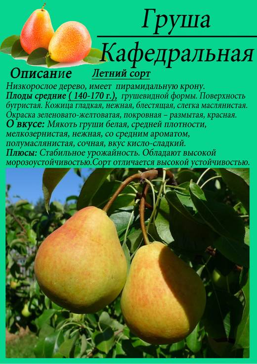
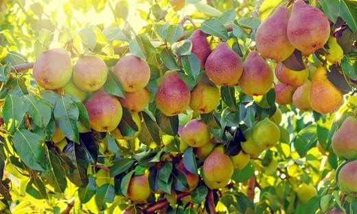
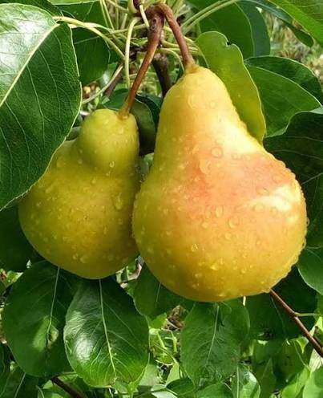
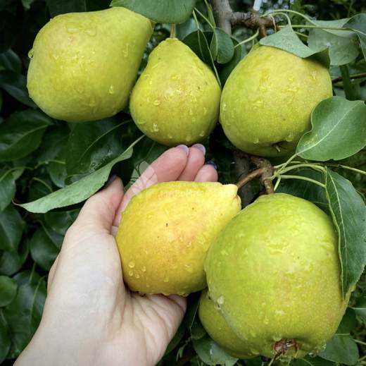

Первая груша сезона: созревает в начале августа, плодоносит ежегодно и отлично дружит с Памятью Жегалова из ряда 5.




Клик по фото — полный размер. Фотографии иллюстрируют сорт/вид; собраны из открытых источников (питомники, сортовые каталоги, Википедия).
Кафедральная — летний сорт Московской сельскохозяйственной академии им. К.А. Тимирязева (С.Т. Чижов, С.П. Потапов). Дерево среднерослое (3,5–4 м) с правильной конической кроной средней густоты.
Плоды ниже средней и средней величины (110–130 г), грушевидные, с заметной бугристой поверхностью, жёлто-зелёные с красным румянцем. Мякоть белая, нежная, полумаслянистая, сочная, кисло-сладкая со слабым ароматом — типичная «летняя» груша: съесть с дерева, а излишки пустить в компот. Скороплодная, плодоносит ежегодно; за годы сортоиспытания показала среднюю урожайность около 85 ц/га.
| Зимостойкость | высокая |
| Устойчивость к парше | хорошая |
| Самоплодность | самобесплодна — нужны опылители |
| Опылители | Память Жегалова, Чижовская, Лада, Нежность |
| Скороплодность | высокая (3–4 год) |
| Лёжкость | низкая: 1–2 недели (летний сорт) |
Советы собраны из отзывов садоводов на форумах и из практики питомников; цитаты приведены по источникам ниже.